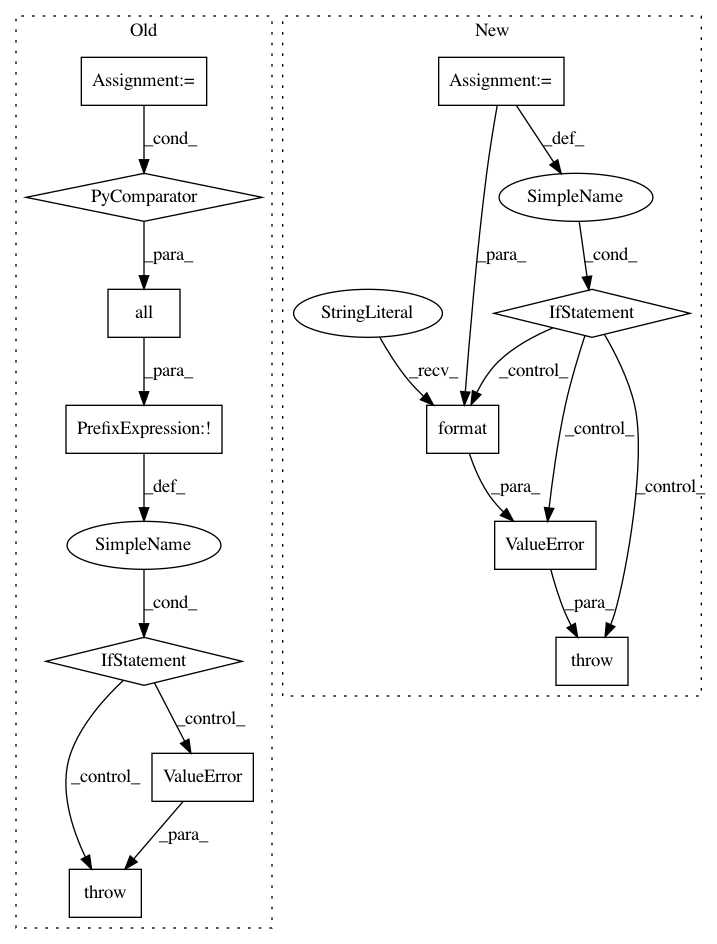

b5ae1c6bde39f5130c975992198f1f8ee5200f9a,tf_agents/agents/dqn/dqn_agent.py,DqnAgent,_check_action_spec,#DqnAgent#Any#,265
Before Change
// TODO(b/119321125): Disable this once index_with_actions supports
// negative-valued actions.
if not all(spec.minimum == 0 for spec in flat_action_spec):
raise ValueError(
"Action specs should have minimum of 0, but saw: {0}".format(
[spec.minimum for spec in flat_action_spec]))
def _setup_policy(self, time_step_spec, action_spec,
boltzmann_temperature, emit_log_probability):
policy = q_policy.QPolicy(
After Change
"Only scalar actions are supported now, but action spec is: {}"
.format(action_spec))
spec = flat_action_spec[0]
// TODO(b/119321125): Disable this once index_with_actions supports
// negative-valued actions.
if spec.minimum != 0:
raise ValueError(
"Action specs should have minimum of 0, but saw: {0}".format(spec))
self._num_actions = spec.maximum - spec.minimum + 1
def _check_network_output(self, net, label):
Check outputs of q_net and target_q_net against expected shape.
In pattern: SUPERPATTERN
Frequency: 3
Non-data size: 12
Instances
Project Name: tensorflow/agents
Commit Name: b5ae1c6bde39f5130c975992198f1f8ee5200f9a
Time: 2020-06-22
Author: ebrevdo@google.com
File Name: tf_agents/agents/dqn/dqn_agent.py
Class Name: DqnAgent
Method Name: _check_action_spec
Project Name: deepgram/kur
Commit Name: 1f1adbf4aa47514d0ce857398fa0d1cb2956e267
Time: 2017-01-03
Author: ajsyp@syptech.net
File Name: kur/providers/shuffle_provider.py
Class Name: ShuffleProvider
Method Name: __init__
Project Name: pgmpy/pgmpy
Commit Name: 654cb3ebcd25491bff876971adcea2d2305207f4
Time: 2016-07-01
Author: yashuseth2503@gmail.com
File Name: pgmpy/factors/continuous/ContinuousFactor.py
Class Name: ContinuousFactor
Method Name: reduce